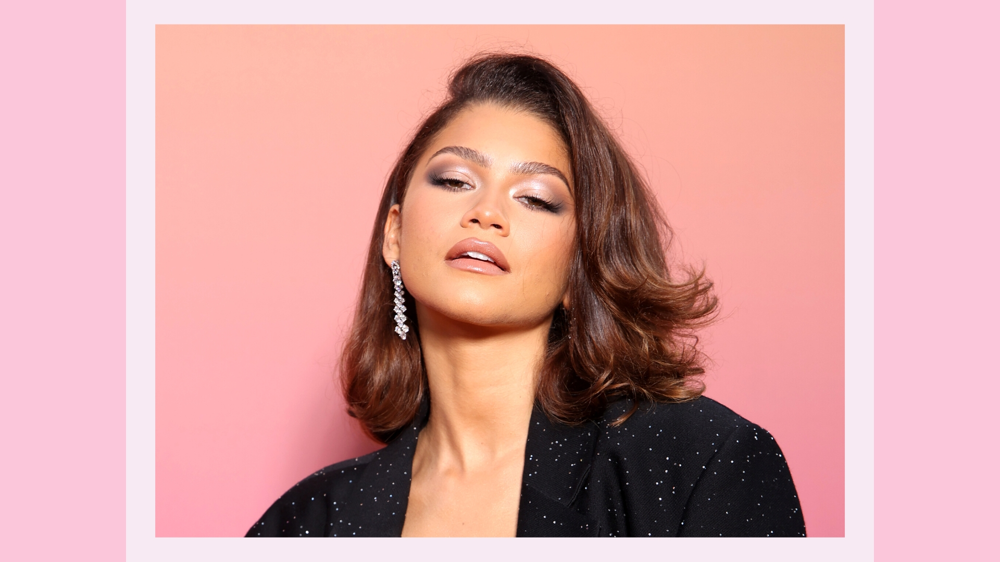

Zendaya’s Bio - The Journey To Fame
Zendaya was born on September 1, 1996, in Oakland, California. She was raised in a family with strong ties to the arts, and her interest in performance began at a young age. Zendeya’s mother, Claire Stoermer, was a teacher, and her father, Kazembe Ajamu, was a director of a theater company. Growing up, Zendaya was exposed to music, dance, and acting, setting the stage for her future career. As a child, she attended the Oakland School for the Arts, where she developed her passion for performing. At an early age, Zendaya showcased her versatility by participating in local theater productions and dance performances.
Zendaya’s journey into the entertainment industry began when she auditioned and got the role of Rocky Blue for the series Shake It Up that aired on Disney Channel. The show, which centers on two teenagers trying to make it as backup dancers on a local dance show, quickly became a fan favorite. Zendaya’s performance stood out as it showcased her natural talent for both acting and dancing. After Shake It Up, Zendaya’s career was taking off. She had released her own music, including the hit single “Replay,” and she starred in other projects, including the Disney Channel movie Zapped. These early roles helped her establish a strong foundation in Hollywood, making her a recognizable figure among the young audience.
Zendaya’s big break came in 2017 when she was cast as MJ in the Spider-Man films, starting with Spider-Man: Homecoming. Her portrayal of the sarcastic yet lovable character was a refreshing take on the iconic role. Her performance in the Spider-Man franchise catapulted her into superstardom, which attracted the attention of both fans and critics alike. However, her role as Rue Bennet in the HBO series Euphoria is what really solidified her place in the spotlight. Zendaya’s raw and powerful performance earned her critical acclaim as well as a Primetime Emmy Award for Outstanding Lead Actress in a Drama Series. At the age of 24, Zendaya became the youngest ever winner in that category, which further cemented her status as one of Hollywood’s brightest stars.
Zendaya’s career has been marked by an impressive list of awards and nominations. Her Emmy Award win for Euphoria is her main highlight, but she has also earned the Teen Choice Awards, Kids’ Choice Awards, and a Satellite Award for Best Ensemble in a Motion Picture for The Greatest Showman. Additionally, Zendaya has already made a lasting impact on the entertainment industry, particularly for young women of color. Her role in Euphoria highlighted the importance of tackling difficult topics such as mental health and addiction, which inspired viewers to have open conversations about these issues. Beyond her acting career, Zendaya’s advocacy for diversity, inclusivity, and social justice has earned her a place as a role model for the younger generation and is slowly becoming an iconic figure.
Zendaya has done a lot not just for herself but for other people as well. She is an admirable person, and if you want to know a little more about her, you can go to TheFamousStar.com/Zendaya/.

Life Timeline
- 1996: Zendaya is born on September 1st in Oakland, California.
- 2009: In November, Zendaya auditioned and was cast as Rocky Blue for the Disney Channel sitcom Shake It Up.
- 2010: Shake It Up premiered its first season on November 7th, which became a significant hit show on the Disney Channel. The Show helped Zendaya gain recognition and fame for her role as Rocky Blue.
- 2011: Zendaya releases her first singles, “Swag it Out” and “Watch Me,” in which the latter was a collaboration with her Shake It Up co-star Bella Thorne.
- 2012: In October, Zendaya performed at the medical operation smile benefit and became an ambassador for Convoy of Hope, encouraging fans to support Hurricane Sandy response efforts.
- 2013: Zendaya competed in Dancing With The Stars, in which she finished as a runner-up. She also published her debut book, Between U and Me: How to Rock Your Tween Years with Style and Confidence. Zendaya had participated in P&G Mean Stink Movement and co-hosted the nationwide livestream assembly. She had released her debut studio album titled Zendaya, which led to moderate success.
- 2014: Zendaya had recorded John Legend’s song “All of Me,” with a portion of the proceeds going to Convoy of Hope. She also appeared as a guest judge on an episode of Project Runway.
- 2015: Zendaya had produced and starred in the sitcom K.C. Undercover, which premiered in January on the Disney Channel. Zendaya visited South Africa with UNAIDS to support the prevention and treatment of HIV/AIDS; she also held a fundraiser for Ikageng Charity for AIDS orphanages. Zendaya graduated from Oak Park High School.
- 2016: Zendaya released her song called “Something New,’ featuring Chris Brown, through Hollywood Records and Republic Records. She had participated in the “Vote Your Future” initiative, appearing in a campaign video to encourage voting. Zendaya launched her new clothing line, Daya by Zendaya. She also celebrated her 20th birthday with a campaign to raise $50,000 to support Convoy of Hope’s Women’s Empowerment Initiative.
- 2017: Zendaya partnered with Verizon as a spokesperson for the #WeNeedMore initiative. She made her feature film debut as MJ in Spider-Man: Homecoming. Zendaya and her costars from Spider-Man: Homecoming fronted a PSA for the Stomp Out Bullying awareness campaign. Zendaya also played the role of Anne Wheeler in the musical The Greatest Showman.
- 2018: In March, Zendaya teamed up with Google to support students at a community school in Oakland. In September, she voiced the role of Meechee in warner bros animated film Smallfoot. She also became an ambassador for Tommy Hilfiger and co-designed the Tommy x Zendaya Capsule collections.
- 2019: Zendaya began to star in the HBO drama series Euphoria, playing the character Rue. She reprised her role as MJ in the Spider-Man: Far From Home film. Zendaya became a spokesmodel for Lancôme.
- 2020: Zendaya had participated in the George Floyd protest and temporarily lent her Instagram account to Patrisse Cullors to share anti-racism resources. She also partnered with Michelle Obama to encourage fans to register to vote before elections. In October, Zendaya won the Visionary Award at the CNMI Green Carpet Fashion Awards and won the Primetime Emmy Award for Outstanding Lead Actress for her role in Euphoria.
- 2021: Zendaya publicly acknowledged her relationship with British actor Tom Holland. She voiced Lola Bunny in Space Jam: A New Legacy, portrayed Chani in Dune, and reprised her role as MJ for Spider-Man: No Way Home. Zendaya also starred and produced Sam Levinson’s Malcom & Marie.
- 2022: Zendaya co-wrote two songs for the second season of Euphoria and earned four Emmy nominations. She won the lead actress award, becoming the youngest person to win two Emmys. She was also on Time magazine as one of the 100 most influential people in the world. Zendaya was named the Global Brand Ambassador for Glaceau Smartwater.
- 2023: Zendaya had voiced her support for Palestine and became an ambassador for Louis Vuitton. She joined Labrinth for a surprise performance of “All of Us” and “I’m Tired” at Coachella, making her first live performance in eight years. Zendaya received the CinemaCon Star of the Year award and won the Golden Globe Award for Best Actress.
- 2024: Zendaya reprised her role as Chani in Dune: Part Two. She had experienced heatstroke during filming due to dehydration, but her performance received high praise. In December, Zendaya and Tom Holland became engaged.
- 2025: In March, Zendaya was nominated for the Golden Globe Award for Best Actress in a motion picture musical or comedy for Challengers. She will also star with Robert Pattinson as Ronnie Spector in Be My Baby.
- 2026: Zendaya is slated to appear in Christopher Nolan’s film The Odyssey, Spider-Man: Brand New Day as MJ once again, and reprise her role as Rue for the third season of Euphoria.
Zendaya has been able to achieve something every year for the past 17 years, and she will continue to accomplish her goals and inspire her fans even more. The timeline showed her greatest accomplishments throughout her life, and if you want to see videos that follow the timeline, simply go to Populartimelines.com/Zendaya/.